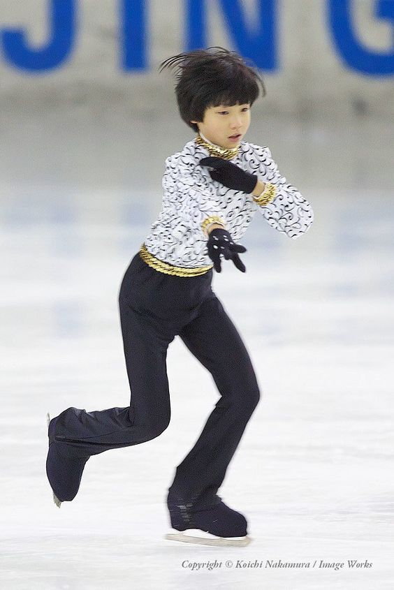

|
Yuzuru Hanju dzimis 1994. gada 7. decembrī Sendai, Japānā. Viņš sāka slidot četru gadu vecumā, sekojot vecākās māsas Sajas pēdās. 2004.–2005. gada sezonā Hanju pirmo reizi piedalījās nacionālajā sacensībās kā iesācējs. Viņš slidoja un izcīnīja zeltu 2004. gada Japānas iesācēju čempionātā iesācēju B kategorijā, kas ir zemākā no divām iesācēju līmeņa kategorijām. Pēc tam viņa mājas slidotava tika slēgta finansiālu problēmu dēļ, samazinot treniņu laiku. Viņa toreizējam trenerim Shōichirō Tsuzuki galu galā nācās pārcelties uz citu laukumu, un viņu aizstāja Nanami Abe, kurš treneja Hanju, līdz viņš pārgāja pie Braiena Orsera.

|